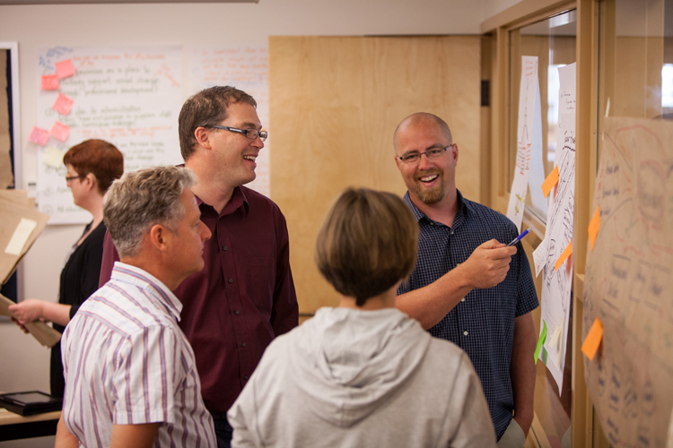

Mentoring as rigorous, humane, and intellectually ambitious work
I work with graduate students whose projects connect literacy, assessment, ethics, justice, policy, and digital or AI-mediated communication. My goal is not dependence on supervision, but the development of strong scholarly judgment.
Areas I supervise
Recent supervision has included work on culturally sustaining writing assessment, AI-generated feedback in formative writing assessment, scenario-based assessment design, teacher assessment practices, and literacy policy.

What students can expect from me
Rigorous and generous feedback. I aim to be direct, thoughtful, and constructive.
Attention to design and argument. I work closely with students on problem framing, construct clarity, methodological fit, and the consequences of their claims.
Scholarship that matters. I encourage students to connect their projects to real educational and social questions.
Increasing independence. My goal is not dependence on supervision, but the development of strong scholarly judgment.
Mentoring outcomes
Graduate students I have supervised have received major awards and competitive funding.
-
Teri Hartman
Language and Literacy Researchers of Canada Master’s Thesis Award; School of Graduate Studies Silver Medal of Merit -
Kacie Neamtu
J. Estill Alexander Future Leaders in Literacy Award; School of Graduate Studies Silver Medal of Merit -
Julie Corrigan
SSHRC Bombardier Doctoral Fellowship -
Brenna Quigley
SSHRC Doctoral Fellowship -
Nisha Toomey
Language and Literacy Researchers of Canada Master’s Thesis Award
For prospective students
I am especially interested in hearing from students whose projects connect literacy or writing assessment to questions of fairness, ethics, justice, digital communication, AI, policy, or pedagogical design.
A strong first message usually includes:
- a brief overview of your proposed topic or problem of practice,
- why you think your project fits my areas of supervision,
- a short description of your background and current stage of study, and
- a CV or brief account of relevant professional or research experience.